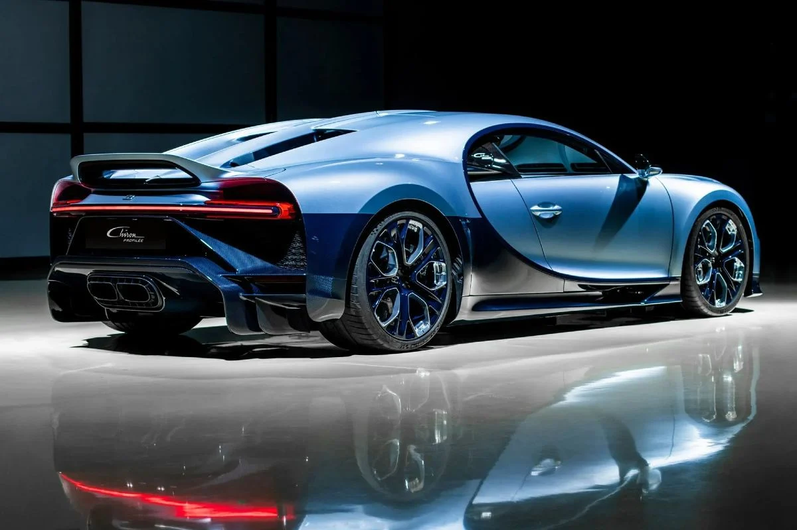
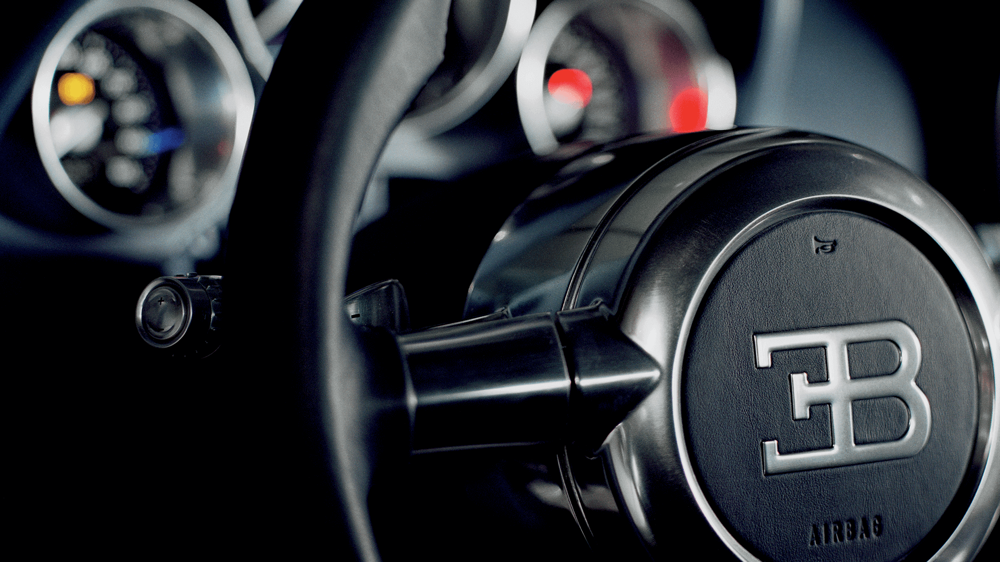
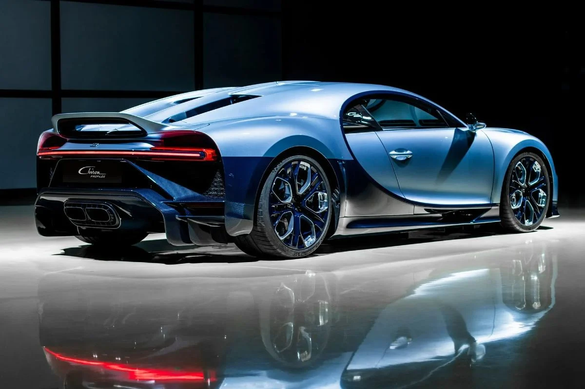
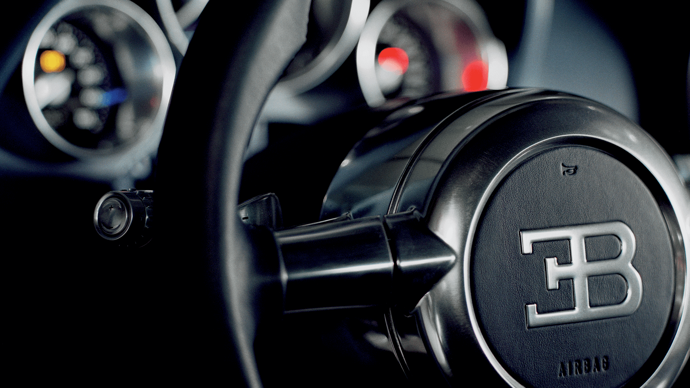
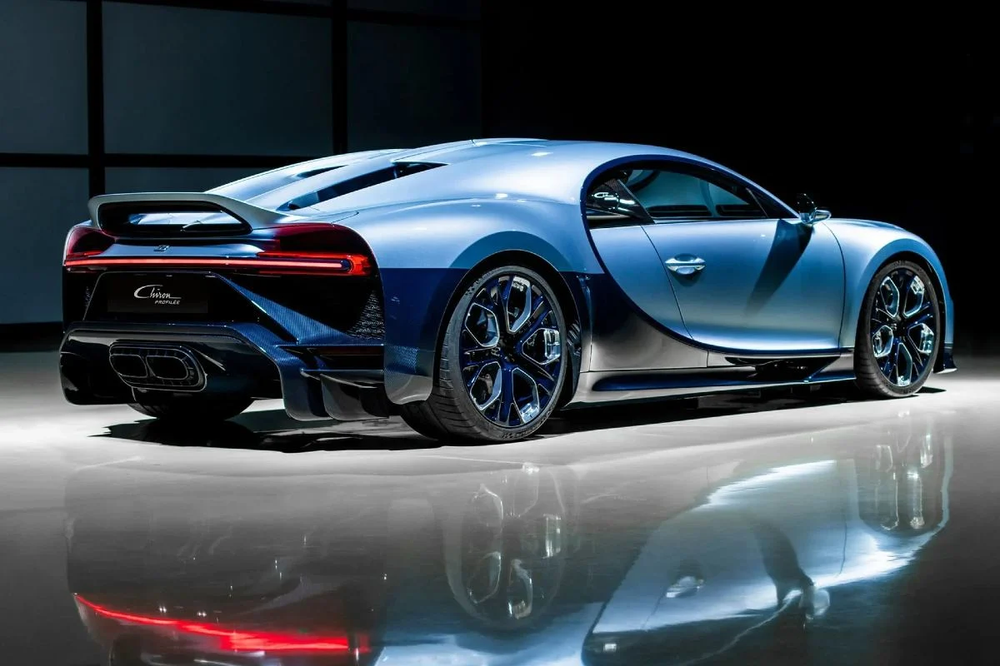
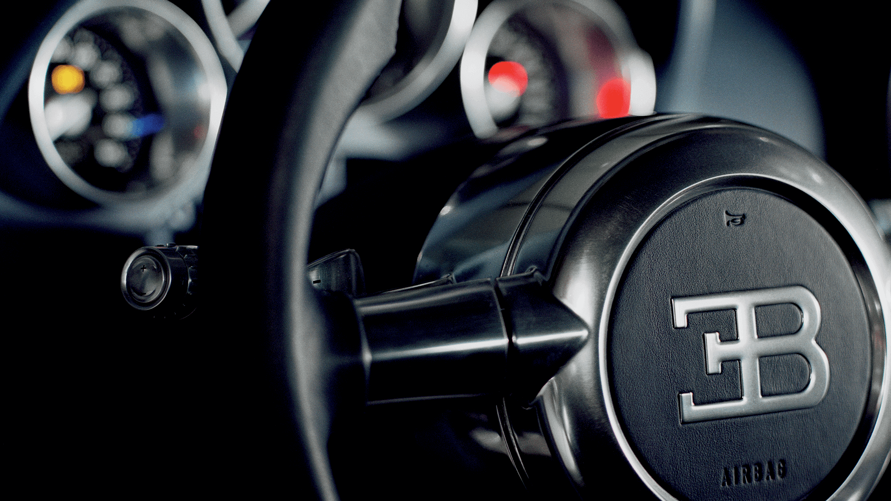
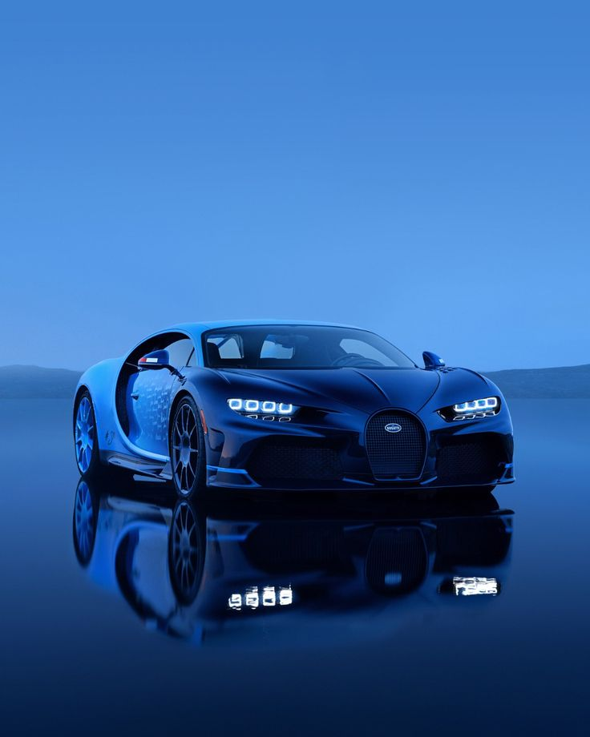
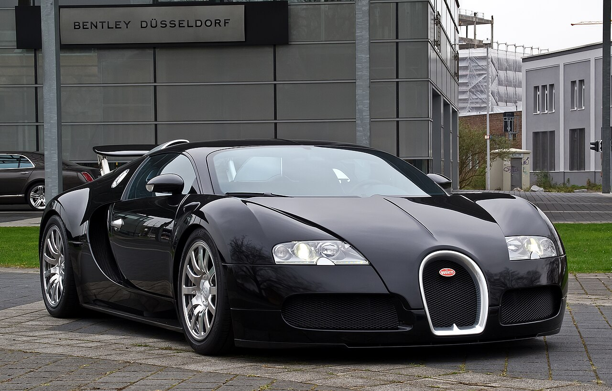
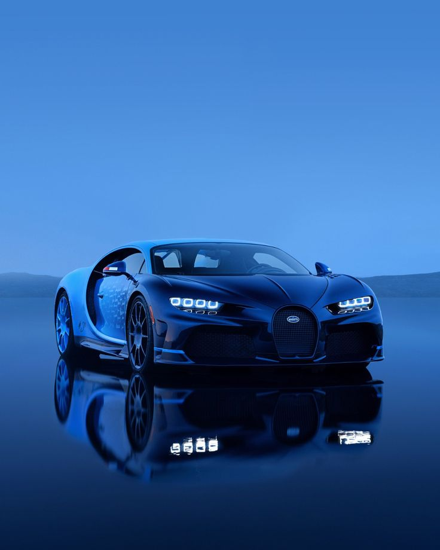
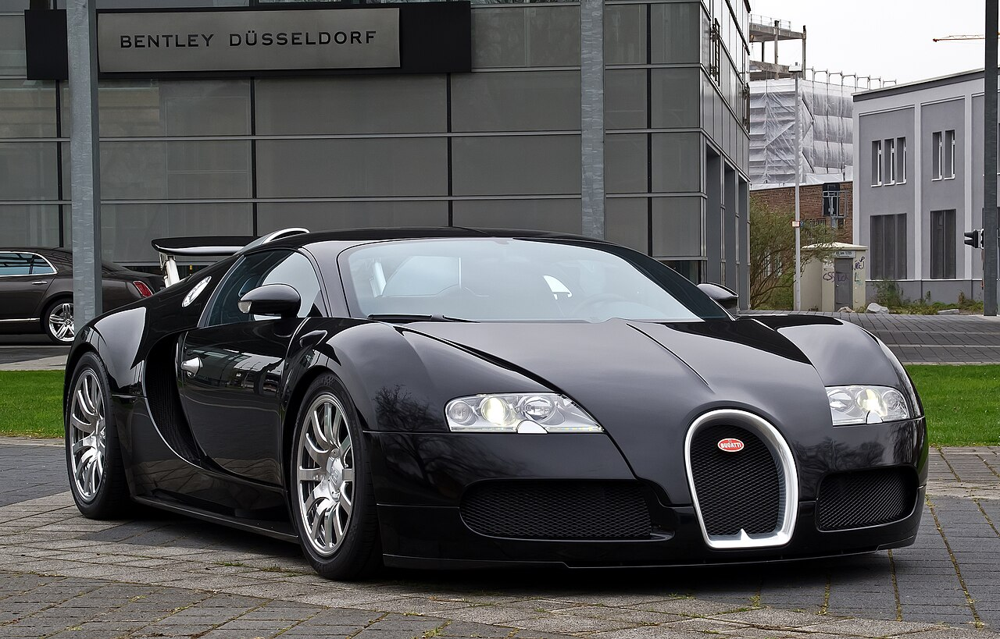

Inês Carvalho | UFCD0154 | 2025


Bugatti Veyron EB 16.4 | Top Speed...
É um supercarro de motor central, desenhado na Alemanha pelo Grupo Volkswagen e fabricado em Molsheim, França. A versão original atingia 407,12 km/h. Foi eleito Carro da Década pela BBC e Top Gear. A versão Super Sport do Veyron foi reconhecida pelo Guinness World Records como o carro de rua mais rápido do mundo, com a velocidade máxima de 431,072 km/h (285,093 mph). Este recorde foi posteriormente quebrado pelo Koenigsegg Agera RS, que atingiu 466,6 km/h em 2017, e se tornou a partir de então, o novo carro de produção mais rápido do mundo. A versão roadster Grand Sport Vitesse do Veyron é o conversível mais rápido do mundo, alcançando a velocidade de 408,84 km/h (254,04 mph) em um teste realizado em 6 de abril de 2013.
 


